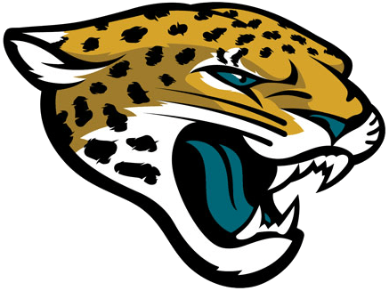

Jack Taylor's Sports Pain Tracker
Current Pain Level
Loading...
Loading your daily dose of pain...
Jacksonville Jaguars
Days since last playoff win: Loading...
Days since last Super Bowl appearance: Loading...
Jack was Loading... years old during the last playoff win!
Loading next disappointment schedule...
Florida State
Days since last CFP win: Loading...
Days since last National Championship: Loading...
Jack was Loading... years old during the last championship!
Loading next heartbreak schedule...